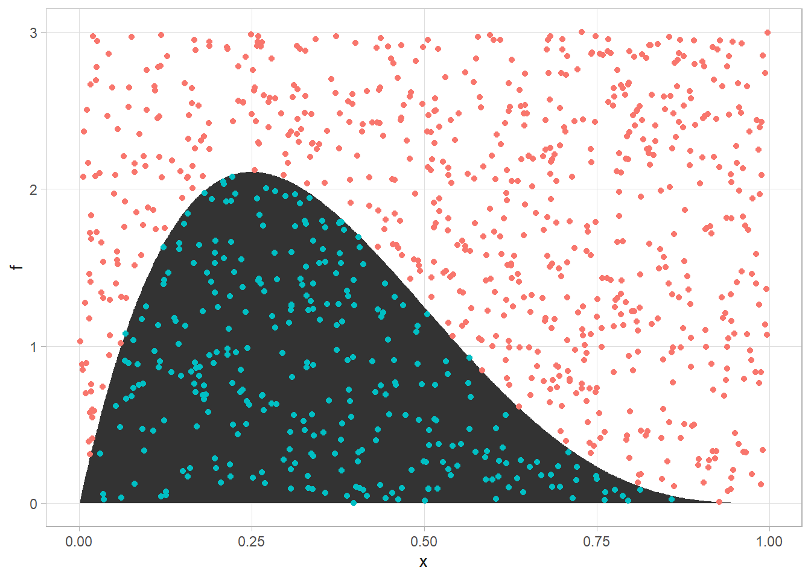
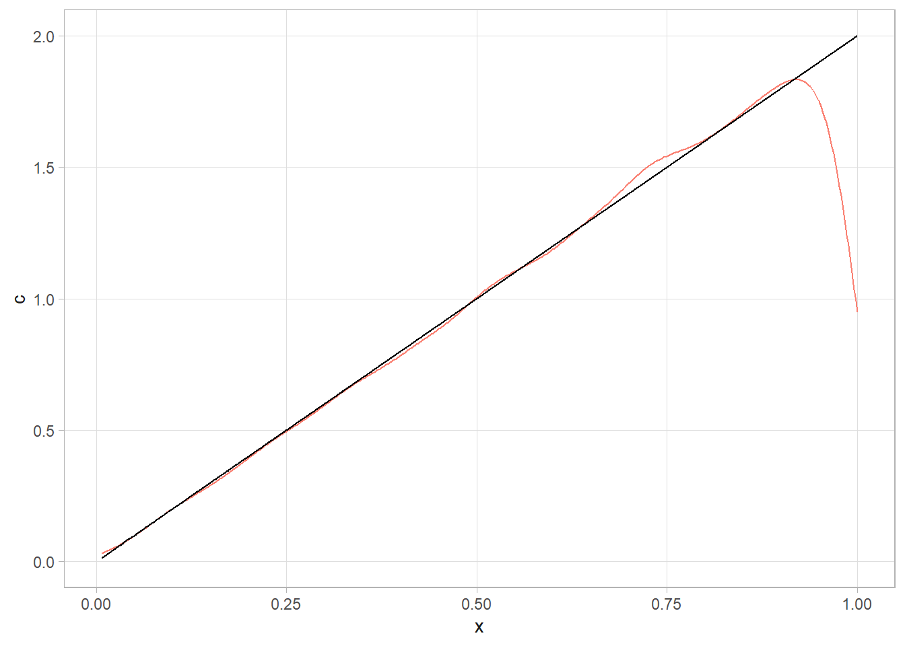
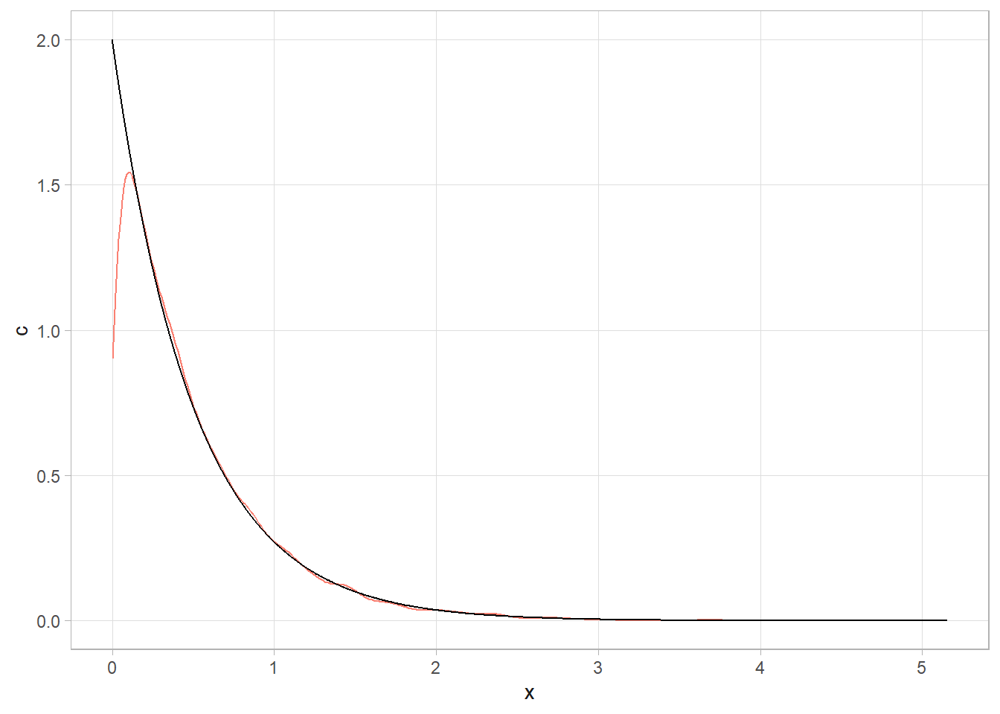
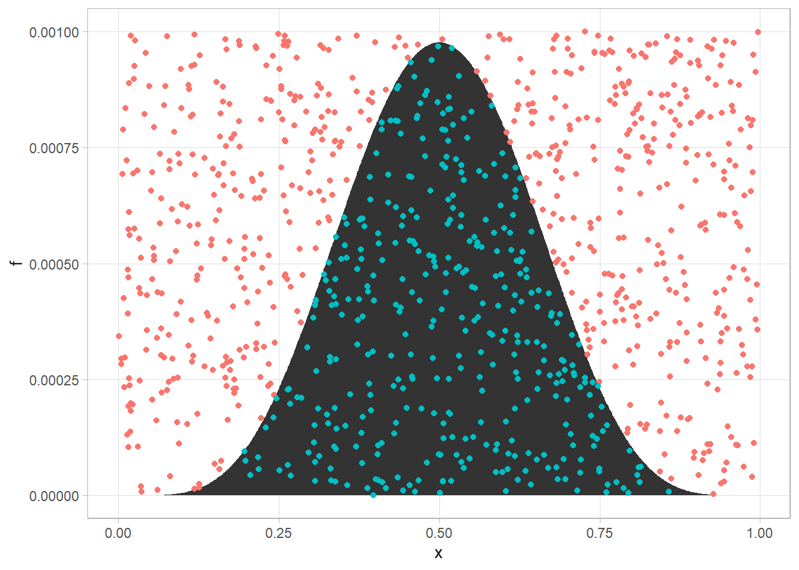

3.9 Monte Carlo Integration
Monte Carlo integration is an empirical way to solve the integrals related to the posterior mean and variance. The population expectation, \(E[X] = \int_{-\infty}^\infty x f(x) dx\), and variance \(Var(X) = E(X-EX)^2 = \int_{-\infty}^\infty (x - EX)^2f(x)dx\), are both integrals.
You can use Monte Carlo to evaluate an integral such as \(A=\int_0^1 20x(1-x)^3dx\). If you randomly select \(n\) points from a defined space \(D\), the number \(z\) enclosed by the integral will follow a binomial distribution, \(Z \sim \text{Bin} (n, p)\) with \(E[Z] = np = n \frac{A}{D}\) and variance \(Var[Z] = np(1-p) = n \frac{A}{D} \left(1-\frac{A}{D}\right)\). If you know the enclosing area, then you can infer the integral area,
\[ \begin{equation} \hat{A} = \frac{z}{n} D \tag{3.8} \end{equation} \]
The variance of \(Var(\hat{A}) = Var\left(\frac{z}{n} D\right) = Var(Z) \left(\frac{z}{n}\right)^2 = \frac{A(D-A)}{n}\). Of course, you do not know \(A\), so you replace it with \(\hat{A}\). Solve this for the Monte Carlo standard error.
\[ \begin{equation} \widehat{s.e.} = \frac{D}{\sqrt{n}} \sqrt{\frac{z}{n}\left(1 - \frac{z}{n} \right)} \tag{3.9} \end{equation} \]
Notice how the Monte Carlo standard error increases with D and decreases with \(n\). Let’s try it. Generate 1,000 points uniformly in the domain [0,1] x [0, 3], then check whether they are below the f() curve.
set.seed(12345)
f <- function(x) {20*x*(1 - x)^3}
# Defined area
D <- 1 * 3
# n random points in defined area.
n <- 1000
x <- runif(n, 0, 1)
y <- runif(n, 0, 3)
is_under <- y <= f(x)
z <- sum(is_under)
# Area is percent of points under the curve
(A_hat <- z / n * D)
## [1] 0.918
(se <- D / sqrt(n) * sqrt(z/n * (1 - z/n)))
## [1] 0.04371814
tibble(x, f = f(x), rand_y = y, is_under) %>%
ggplot(aes(x = x)) +
geom_area(aes(y = f)) +
geom_point(aes(y = rand_y, color = is_under), show.legend = FALSE)
3.9.1 Inverse Sampling
In Bayesian analysis, you do not always have a pre-defined distribution to sample from. In these cases, you may be able to use inverse sampling. Given \(f(x)\), the corresponding CDF is \(F(x) = \int_0^x f(x)dx\). Derive its inverse by solving \(F(x)\) for \(x\). To inverse sample, sample from \(U(0,1)\) and evaluate \(x = F^{-1}(u)\).
Here is an example. Suppose \(f(x) = 2x\) on \(x \in [0,1]\) and 0 otherwise. Then \(F(x) = x^2 = u\) and solving \(F(x)\) for \(x\), \(F^{-1}(u) = \sqrt{u}\).
set.seed(12345)
u <- runif(10^4)
x <- sqrt(u)
tibble(x, c = 2*x) %>% ggplot(aes(x = x)) + geom_density(color = "salmon") + geom_line(aes(y = c))
Suppose \(f(x) = \lambda e^{-\lambda x}\) on \(x \in [0,1]\) and 0 otherwise. Then \(F(x) = 1 - e^{-\lambda x} = u\) and \(F^{-1}(u) = - \frac{1}{\lambda} \ln [1-u]\).
set.seed(12345)
u <- runif(10^4)
lambda <- 2
x <- - (1 / lambda) * log(1 - u)
tibble(x, c = 2 * exp(-2*x)) %>% ggplot(aes(x = x)) + geom_density(color = "salmon") +
geom_line(aes(y = c))
3.9.2 Rejection Sampling
The problem is that inverse sampling only works when \(F(x)\) is invertible. Another option is rejection sampling. Suppose you cannot sample from \(f_X(x)\) but you can from \(g_X(x)\) and the importance ratio \(\frac{f_X(x)}{g_X(x)} <= M\) for all \(x\). Then you can sample \(x\) from \(g_X(x)\), then draw from \(u \sim U(0,1)\) and accept \(y = x\) with probability \(\frac{f_X(x)}{M g_X(x)}\), i.e., if accepts if \(u \ge \frac{f_X(x)}{M g_X(x)}\).
Return to the example where \(f(x) = 2x\) on \(x \in [0,1]\). Consider \(g(x) = 1\) on \(x \in [0,1]\), the pdf of uniform distribution. The ratio \({f(x)}{g(x)} = 2x \le 2\) for \(x \in [0,1]\). So it is bounded by \(M = 2\). Accept \(x\) with probability \(\frac{f_X(x)}{M g_X(x)} = \frac{2x}{2 \cdot 1} = x\).
set.seed(12345)
# g(x) is uniform dist
x <- runif(10^4)
# probability of acceptance = x
p_acc <- x
# Draw from u
u <- runif(10^4)
is_in <- u < p_acc
# Keep the accepted ones
my_sample <- x[is_in]
# Only kept a little more than half - no very efficient.
length(my_sample)## [1] 5017Suppose \(f(x) = 6x(1-x)\) on \(x \in [0,1]\). Consider \(g(x) = 1\) on \(x \in [0,1]\), the pdf of uniform distribution. The ratio \({f(x)}{g(x)} = 6x(1-x) \le 1.5\) for \(x \in [0,1]\). So it is bounded by \(M = 1.5\). Accept \(x\) with probability \(\frac{f_X(x)}{M g_X(x)} = \frac{6x(1-x)}{1.5 \cdot 1} = 4x(1 - x)\).
set.seed(12345)
# g(x) is uniform dist
x <- runif(10^4)
# probability of acceptance =
p_acc <- 4 * x * (1 - x)
# Draw from u
u <- runif(10^4)
is_in <- u < p_acc
# The overall acceptance probability
mean(is_in)## [1] 0.6728# Keep the accepted ones
my_sample <- x[is_in]
# Only kept a little more than half - no very efficient.
length(my_sample)## [1] 67283.9.3 Importance Sampling
Importance sampling allows to substitute sampling from a “difficult” distribution with sampling from an “easy” one. Suppose you have a random variable \(x\) with PDF \(f(x)\). The expected value of a function of \(x\), \(h(x)\) is defined by \(E(h(x)) = \int h(x)f(x)dx\). Using the law of large numbers, you can approximate \(E(h(x))\) by its average value, \(\frac{1}{n} \sum_i h(x_i)\). So you would sample from \(f(x)\), multiply by \(h(x)\), and take the average.
What would you do if you did not know how to sample from \(f(x)\)? Instead you could identify a function you could sample from, and evaluate the integral of the ratio, \(E(h(x)) = \int\left[ h(x) \frac{f(x)}{g(x)}\right] g(x) dx\). With the law of large numbers, \(E(h(x)) = \frac{1}{n}\sum_i\left[h(x_i) \frac{f(x_i)}{g(x_i)} \right]\). The ratios \(w(x_i) = \frac{f(x_i)}{g(x_i)}\) are called importance weights. Importance weights tell you how useful each observation is.
Suppose you have a random variable \(x\) with PDF \(f(x) = 25xe^{-5x} = \text{Gamma}(2,5)\) for \(X>0\). If you wanted to know the expected value of \(h(x) = x\) could sample straight from rgamma() and take the average.
## [1] 0.4011863Great, if rgamma() wasn’t an option, how would you evaluate \(\int_0^\infty x f(x)dx = \int_0^\infty 25x^2e^{-5x}dx\)? Let \(g(x) = 5e^{-5x}\). Then \(E(h(x)) = \frac{1}{n}\sum_i\left[x \frac{25xe^{-5x}}{5e^{-5x}} \right] = \frac{1}{n}\sum_i 5x_i^2\)
## [1] 0.3986298Great, if rgamma() wasn’t an option, how would you evaluate \(\int_0^\infty x f(x)dx = \int_0^\infty 25x^2e^{-5x}dx\)? Let \(g(x) = 5e^{-5x}\). Then \(E(h(x)) = \frac{1}{n}\sum_i\left[x \frac{25xe^{-5x}}{5e^{-5x}} \right] = \frac{1}{n}\sum_i 5x_i^2\)
## [1] 0.3986298Let’s try another one. Suppose you want to empirically estimate \(\int_0^1 x^5(1-x)^5dx\). First, use the simple Monte Carlo method to estimate the integral.
set.seed(12345)
f <- function(x) {x^5*(1 - x)^5}
# Set the defined area. Plot f(x) over the range of x to set the appropriate limits.
x_lim <- c(0, 1)
y_lim <- c(0, 10^-3)
D <- (x_lim[2] - x_lim[1]) * (y_lim[2] - y_lim[1])
# Sample from D.
n <- 10^3
x <- runif(n, x_lim[1], x_lim[2])
y <- runif(n, y_lim[1], y_lim[2])
# Area is percent of points under the curve
is_under <- y <= f(x)
z <- sum(is_under)
(A_hat <- z / n * D)## [1] 0.000366## [1] 1.523299e-05tibble(x, f = f(x), rand_y = y, is_under) %>%
ggplot(aes(x = x)) +
geom_area(aes(y = f)) +
geom_point(aes(y = rand_y, color = is_under), show.legend = FALSE)
Now let’s do it with direct sampling. \(x^5(1-x)^5\) is almost like the beta function. \(\int_0^1 x^5(1-x)^5dx = \int_0^1 \frac{x}{1260} 1260x^4(1-x)^5dx = \int_0^1 \frac{x}{1250} g(x)dx\).
## [1] 0.0003606394Now let’s do it with importance sampling. Just define \(\int_0^1 x^5(1-x)^5dx = \int_0^1 x^5(1-x)^5g(x)dx\) where \(g(x) = 1\) is the uniform pdf.
## [1] 0.0003651211